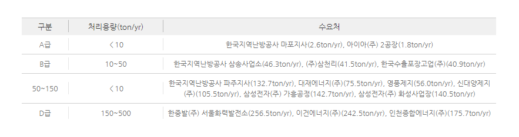
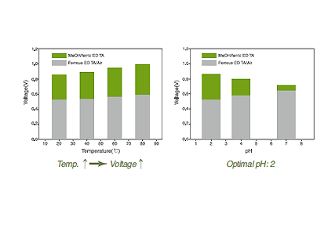
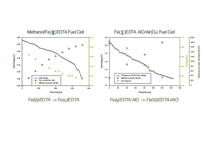
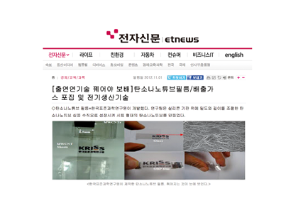

주제별 연구성과
주제별 연구성과
KAIST RESEARCH ACHIEVEMENTS
발전소의 대량배출 가스로
전기를 만들다
건설및환경공학과 한종인
요약
발전소, 정유정제소 등으로부터 대량으로 배출되는 배기가스 중 질소산화물(NOx)만을 선택적으로 분리 및 포집이 가능한 시제품을 연료전지형, 전기분해형의 두 유형으로 개발하여 탈질 설비 적용시설의 질소배출량, 농도, 처리속도에 최적화된 시스템을 구축하여 상용화하는 것이 최종목표이다. 현재 Lab-scale 규모로 제작된 연료전지형 질소산화물 제거장치의 처리용량은 1ton/yr 수준이며, A~D의 단계별 scale-up을 통해 처리용량을 늘리고, 선택적 환원촉매공정(SCR)을 대체하여 다양한 질소 산화물 배출업소에 공급하고자 한다. 기존 탈질설비와는 달리 상온(25°C)에서도 운전이 가능하며 산성 조건에서 성능이 우수하므로 다량의 CO2가 포함된 배기가스에 활용성이 높을 것으로 기대된다.
연구내용
발전시설, 산업용 보일러, 소각시설 등의 화석연료 사용시설과 자동차 엔진의 연소과정에서는 인체에 유해한 다량의 질소산화물(NOx)이 발생되고 있으며, 이러한 NOx의 배출은 산성비, 오존층의 감소 및 광화학적 스모그를 생성하는 등 대기오염에도 큰 영향을 미친다. 발전시설, 산업용 보일러, 소각시설 등의 화석연료 사용시설과 자동차 엔진의 연소과정에서는 인체에 유해한 다량의 질소산화물(NOx)이 발생되고 있으며, 이러한 NOx의 배출은 산성비, 오존층의 감소 및 광화학적 스모그를 생성하는 등 대기오염에도 큰 영향을 미친다.
현재 이를 제거하기 위한 공정으로는 촉매에 환원제(NH3등)를 분사하는 선택적 촉매환원법(SCR, Selective catalytic reduction)과 전자빔을 이용한 공정, 그리고 펄스 코로나 방전공정 등이 연구 개발되어 왔다. 또한 최근에는 미생물을 이용하여 NOx를 처리하는 BioDeNox공정이 새롭게 개발되어 각광받고 있다. 하지만 NOx를 처리하는데는 많은 에너지와 돈이 소모되며 현재 개발 중인 BioDeNox 공정은 처리속도에 문제가 있다. NOx를 이용하여 암모니아비료나 질산 등의 고부가 가치의 물질을 만들어 낼 수 있다면 경제성을 확보할 수 있을 것으로 사료된다. 암모니아성비료는 질산과 암모니아를 혼합하여 제조할 수 있고 질산의 경우는 NOx를 물속에 녹여서 생산가능 하다. 산업적으로 배출되는 배기가스에는 NOx뿐만 아니라 SOx, CO, CO2 등의 다른 가스들도 포함이 되어있기 때문에 현재는 질소와 천연가스를 혼합하여 귀금속 촉매가 존재하는 조건에서 개질하여 얻어낸 순수한 NOx를 사용하고 있다. 이 방법은 NOx를 제조하는데만 많은 비용이 들기 때문에 최종 생산물로부터 경제성을 확보하기 힘들다고 사료된다. 만일 산업배기가스로부터 순수한 NOx를 분리해 낼 수 있다면 순수한 NOx의 생산 및 처리의 일석이조 효과를 얻어 낼 수 있다. 금속과 이온 결합을 하여 존재하는 몇몇 킬레이트 화합물, 예를 들면 Ferrous(Fe2+) EDTA는 NOx를 선택적으로 포집할 수 있는 특성을 지니고 있다. 카이스트 건설 및 환경공학과 한종인 교수 연구팀에서는 이러한 Ferrous EDTA의 특성을 이용하여 에너지의 생산과 동시에 NOx를 선택적으로 흡/탈착할 수 있는 연료전지 시스템을 구축하였다. 이는 전 세계적으로 대량으로 배출되는 배기가스 중 특히 NOx를 효율적으로 재이용할 수 있는 혁신적인 기술이 될 것으로 사료된다.

 그림 2. I연료전지형 질소산화물 제거장치의 온도/pH에 따른 출력 전압변화
 그림 3. 연료전지형 질소산화물 제거장치의 출력 전압 및 중간매개체 재생속도
본 사업화 대상기술은 질소산화물이 포함된 배기가스로부터 Fe(III)EDTA를 이용하여 일산화질소만을 분리하여 흡착 및 포집 기술로 킬레이트 화합물인 EDTA가 결합된 Ferrous(Fe2+), 즉 Ferrous-EDTA가 NOx를 선택적으로 흡착할 수 있는 성질과 Ferrous-EDTA/Ferric-EDTA의 전기화학적 산화-환원 포텐셜을 이용한 연료전지 시스템을 접목한 혁신적인 질소산화물 제거 기술이다. 연료전지의 원리를 응용한 기술이므로 기존 선택적 촉매 환원법(이하 SCR)과 비교하여 ① 상온에서 운전이 가능하고, ② 귀금속 촉매 사용량이 적으며, ③ 추가적인 전기에너지 생산 및 ④ 포집된 NOx를 이용하여 질산을 저렴하게 생산 가능한 장점을 가진다. Lab-scale 규모(1ton NOx/yr)로 현재 99% 이상 질소산화물 제거율을 달성했다. NOx가 순수하게 분리되기 때문에, 질산이나 질소 비료 생산에 쓰이는 원료를 무료로 얻을 수 있으며, 현재 분류된 질소산화물을 이용하여 이를 바이오에탄올로 전화하는 통합 공정 개발에 이용하는 등의 고부가가치 산물로 연계하는 특허를 등록하고 활발한 연구를 수행하고 있다. 또한 카이스트 기술사업화센터, 주식회사 한양세미텍과 연계하여 기술 이전에 대한 검증과 관련 과제를 수행하고 있다.

연료전지 시스템을 이용하여 질소 산화물을 포집하면서 전기를 생산하기때문에 지속적인 공정을 통해 질소 산화물 제거 가능. 포집된 질소 산화물을 전환하여 기존의 질산이나 비료를 만드는 과정등 고부가 가치 산물을 생산하는 데 활용. 질소 산화물을 전환하여 차세대 연료로 대두되는 바이오 에탄올 바이오 디젤 등에 전처리 용매로 활용 가능.
연구실적
ㆍ기업체 기술이전 협의 중: (주)한양세미텍
ㆍ특허 등록(2건)
ㆍSCI급 국제학술지 2편 게재
ㆍ국내 언론 보도 성과: 전자신문(2012.11.01.) "배출가스 포집 및 전기 생산기술"
참고자료
ㆍKim, K., Kim, D.-Y., Lee, K., and Han, J.-I.(2013). "Electricity generation from iron EDTA-based liquid redox sulfur recovery process with enhanced stability of EDTA." Energy Conversion & Management. 76: 342-346
ㆍKim, D.-Y., and Han, J.-I.(2013). "An innovative dual fuel ce llto capture and correct pure NOX from flue gases." Journal of Applied Electrochemistry. 43(10): 1011-1016